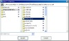
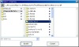

 
2006年08月08日 文責：浅岡 浩子
もくじ：
分子カタログは、分子構造のサムネイル（縮小画像）を一覧で表示します。
サムネイルから分子ビューアを開くこともできます。
空の分子カタログを開くには、 ケモじゅんランチャー の 「Tools」->「Molecular Catalogue」メニューを選択します。
分子カタログで「File」->「Select Directory」メニューを選択して、分子ファイルが格納されている好きなフォルダを選んでください。
サンプルデータフォルダ内にある分子ファイルを一覧する場合には、 ケモじゅんランチャー の 「Tools」->「Molecular Catalogue
- Select Data」メニューが便利です。
特定のフォルダ内にあるディレクトリのリストが出てくるので、その中から選んでください。
分子カタログの画面は以下のようになっています。
番号表示, ファイル名表示などのメニューで表示／非表示の変更が出来ます。
マウスやキーで、様々な操作が出来ます。
クリックすると、選択状態になります。
選択を解除する場合は、選択されているものを再度クリックするか、分子のサムネイルが表示されていない領域でクリックします。
[Shift]キーを押しながらクリックすると、複数選択ができます。
[Shift]キーを押しながら、選択されているものを再度クリックすると、それだけ選択を解除します。
四角形で領域を指定して、複数選択することができます。
サムネイルが表示されていないところで、マウスを長押しした後でドラッグしてください。
黒い線で領域が描かれます。
マウスをはなすと、選択状態になります。
少しでも領域に入ったものが選択されます。
矢印キーで、スクロール操作ができます。
選択しているサムネイルが１つの場合、選択対象が移動し、スクロールも行います。
その他の場合は、選択状態は変化せず、スクロールのみを行います。
場所を移動することが出来ます。
サムネイルの上でマウスを長押しします。
マウスカーソルが握った手の形（ ）になり、 移動対象のものが青い枠で表示されます。
）になり、 移動対象のものが青い枠で表示されます。
同じウィンドウの中で、移動したい場所へドロップします。
ドロップした場所に移動します。
元にあった場所には空きが作られないように詰められます。
[Shift]キーを押しながらドロップすると、元にあった場所には空きが作られます。
新しい分子カタログのウィンドウにドロップすることもできます。
この場合、移動ではなくコピーになりますので、元のウィンドウの状態はそのままです。
複数選択でも上記の操作が可能です。
対象のものをすべて移動もしくはコピーします。
サムネイルをダブルクリックすると、分子ビューアを開きます。
開かれた分子ビューアには、カメラボタンがついています。
分子ビューアで設定や方向を変更した後にカメラボタンを押すと、一覧のサムネイルが更新されます。
ウィンドウの上部にあるメニューです。
|
|
新しい空の分子カタログが開きます。
ディレクトリを指定して、その中に格納されている分子ファイルのサムネイルを一覧に表示します。
ディレクトリを指定するダイアログが現れます。
ディレクトリを選択して「Accept」ボタンを押します。
指定したディレクトリの直下に格納されている分子ファイルを読み込んで、一覧に表示します。
サブフォルダ内にある分子ファイルは対象になりません。
すでに一覧されているウィンドウでメニューを実行すると、サムネイルは追加されます。
分子カタログファイルを指定して、サムネイルを一覧に表示します。
分子カタログファイル（*.catalogue）は、このツール専用のファイルフォーマットです。
一覧で表示されている分子ファイル（*.mol）のパスや、サムネイルを表示する際の設定などの情報が書かれています。
このファイルを作成するには、「Save Catalogue File」もしくは「 Save as Catalogue File」を参照してください。
カタログファイルを保存した時点での分子ファイルへのパスが記述されています。
元の分子ファイル（*.mol）の場所を変更した場合、保存したときの状態では開かなくなってしまいますので注意してください。
分子カタログファイル（*.catalogue）を指定するダイアログが現れます。
ファイルを選択して「Accept」ボタンを押します。
すでに一覧されているウィンドウでメニューを実行すると、前に一覧されているサムネイルは削除されます。
SDファイルを指定して、それぞれの分子を一覧に表示します。
SDファイル（*.sd）を指定するダイアログが現れます。
ファイルを選択して「Accept」ボタンを押します。
カタログファイル（*.catalogue）を開くと、スティック表示やスペースフィル表示などの設定情報が再現されますが、 SDファイル（*.sd）では、デフォルトの設定で一覧表示されます。
SDファイルを開くと、SDファイルのあるディレクトリに、SDファイルを分割した分子ファイル（*.mol）を自動的に作成します。
分子カタログでは、この時に作成される *.mol ファイルを参照してサムネイルを作成したり、分子ビューアを開きます。
分子カタログを利用した後、同じように分子カタログを利用したり、これらのファイルを再度利用する必要がない場合には、削除してください。
すでに一覧されているウィンドウでメニューを実行すると、前に一覧されているサムネイルは削除されます。
分子カタログの状態を保存します。
現在開いている化学カタログファイル（*.catalogue）に上書き保存します。
化学カタログのウィンドウラベルにファイル名が表示されていない場合は、化学カタログファイル名が決定されていません。
この場合は、このメニューを選んでも、 下記の「Save as Catalogue File」と同様の処理になります。
分子カタログの状態を、ファイル名を指定して保存します。
各々の視点方向や表示設定などの情報も保存されます。
初期状態ではない一覧方法を覚えておく場合に分子カタログファイルを保存しておくと良いでしょう。
分子カタログファイル（*.catalogue）を入力するダイアログが現れます。
ファイル名を入力して「Accept」ボタンを押します。
デフォルトのファイル名は、[年月日時分秒].catalogueです。
保存すると、ファイル名がウィンドウラベルに表示されます。
すでに存在するファイル名に保存しようとすると、ダイアログで警告が出ます。
上書きしないようにする場合は、一度保存を中断して、 違うディレクトリを指定しなおすか、ファイル名を変更してください。
分子カタログに一覧されている分子を、SDファイル（MDLmolファイルのマルチファイル形式）で保存します。
SDファイル（*.sd）を入力するダイアログが現れます。
ファイル名を入力して「Accept」ボタンを押します。
デフォルトのファイル名は、[年月日時分秒].sdです。
一覧に表示されている状態の画像ファイルを作成します。
画像ファイル（*.jpg）を入力するダイアログが現れます。
ファイル名を入力して「Accept」ボタンを押します。
デフォルトのファイル名は、[年月日時分秒].jpgです。
作成した場所を忘れないようにしましょう。
[Shift] キーもしくは [Alt] キーを押しながらメニューを選択すると、グレースケールの画像を作成します。
一覧に表示されている状態のHTMLファイルを作成します。
ディレクトリを入力するダイアログが現れます。
保存するディレクトリ名を入力して「Accept」ボタンを押します。
デフォルトのディレクトリ名は、[年月日時分秒]です。
作成後は、自動的にウェブブラウザで表示されます。
ウィンドウを閉じます。
|
|
一覧で選択しているサムネイルの分子を、分子ビューアで開きます。
一覧で選択しているサムネイルを削除します。
一覧のサムネイルをすべて選択します。
|
|
サムネイルの左上に番号を表示します。
| チェックON | チェックOFF |
| 表示 | 非表示 |
サムネイルの右下にファイル名を表示します。
| チェックON | チェックOFF |
| 表示 | 非表示 |
横並びに、いくつサムネイルを並べるかを指定します。
途中に空き領域がある場合、詰めて並べなおします。
|
|
基本説明、メニュー等の説明が記述してある取扱説明書 (このページ)をブラウザで開きます。
このメニューは、ランタイム版では選択することができません。
開発時にプログラムの状態などを確認するためのメニューです。
選択可能な場合は、インスペクターが開きます。


{kind=link}
{kind=link}
{kind=link}
{kind=link}
{kind=link}
{kind=link}
{kind=link}
{kind=link}
{kind=link}
{kind=link}
{kind=link}
{kind=link}
{kind=link}
{kind=link}
{kind=link}
{kind=link}
{kind=link}
{kind=link}
{kind=link}
{kind=link}
{kind=link}
{kind=link}
{kind=link}
{kind=link}
{kind=link}
{kind=link}
{kind=link}
{kind=link}
{kind=link}
{kind=link}
{kind=link}
{kind=link}
{kind=link}
{kind=link}
{kind=link}
{kind=link}
{kind=link}
{kind=link}
{kind=link}
{kind=link}
{kind=link}
{kind=link}
{kind=link}
{kind=link}
{kind=link}
{kind=link}
{kind=link}
{kind=link}
{kind=link}
{kind=link}
{kind=link}
{kind=link}
{kind=link}